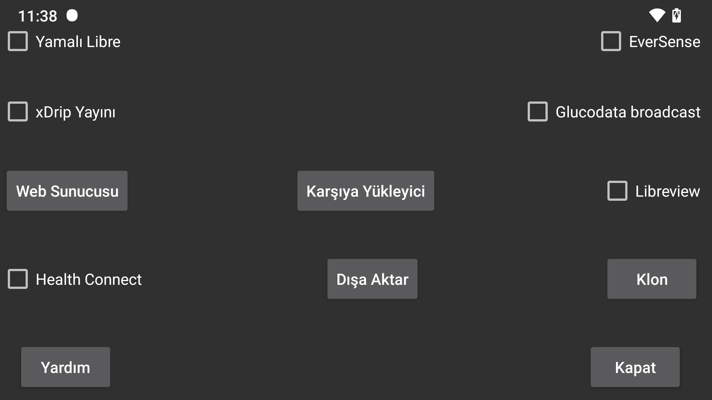

ar de es hi it ja nl pl ru tr uk uz en
Dakikalık glikoz değerlerini Health Connect'e gönderin. Diğer uygulamalara bu glikoz değerlerine erişim verebilirsiniz, örneğin Google Fit. Diğer uygulamalar yine Google Fit'ten veri alabilir.
Freestyle Libre 2 ve 3 glikoz değerlerini ve miktarlarını Libreview'e göndermek ve Freestyle Libre 3 sensör aktivasyonu sırasında kullanılan hesap kimliğini almak için Libreview ile bağlantı kurun. Ayarları değiştirmek için dokunun.
Yamalı Libre yayınını (aslen yamalanmış Alman Librelink uygulaması 2.3.0 tarafından gönderilir) kullanarak Bluetooth glikoz veri akışını her dakika xDrip'e gönderin. xDrip'te Libre2'yi (yamalanmış Uygulama) donanım veri kaynağı olarak ayarlamanız gerekir. xDrip'te görüntülenen glikoz değerleri, alınan değerlerden farklıdır. xDrip verileri yalnızca 5 dakikada bir günceller, muhtemelen bunun nedeni yalnızca 5 dakikada bir gönderen cihazlar için yapılmış olmasıdır. (xDrip'e bağlı bir saat düzenli olarak 9 dakikadan eski değerleri görüntüler.) Ayrıca xDrip, alınan glikoz değerlerini kendi yorumlar. Ayna (klon) cihazlar da xDrip'e veri gönderilebilir.
xDrip'in glikoz değerini her dakika güncelleme girişimi için bakınız: https://github.com/jakobheyman/xdripJH
Freestyle Libre 3 sensörleri, bağlantı kesildikten sonra kaçırılan değerleri gönderir. Bu değerler bu yayınla birlikte gönderilmez. Juggluco'daki Web sunucusunu açıp Nightscout’a veri gönderirseniz ve xDrip'i Nightscout takipçisi yaparsanız bunları alırsınız. Nightscout sunucusu: http://127.0.0.1:17580
Juggluco ayrıca xDrip saat uygulamalarıyla doğrudan iletişim kurabilir, böylece saat uygulaması daha yeni glikoz değerlerini görüntüler. Bu özelliği kullanmak için sol menüde Saat'in altındaki "Web Sunucusu"'nu kontrol edin. Daha fazla bilgi için: Sol Menü > Saat > Yardım. xDrip web sunucusu tarafından kullanılan ağ portunu yalnızca bir uygulama dinleyebilir, bu nedenle Juggluco'dakini kullanmak istiyorsanız xDrip uygulamasında "xDrip webservice"i kapatmanız gerekir.
Bir glikoz yayını daha. Her dakika xDrip'e bir glikoz değeri göndermek için kullanılabilir. xDrip'te Donanım Veri Kaynağı olarak “640G/EverSense” ayarlamanız gerekir.
xDrip, 5 dakikada bir değerde ısrar ettiği için bunların neredeyse hepsini yok sayacaktır. Bu kısıtlamayı xDrip'in kaynak kodunu düzenleyerek kaldırabilirsiniz. Change 4 * 60 * 1000 to 55 * 1000 in app/src/main/java/com/eveningoutpost/dexdrip/models/BgReading.java, böylece olur:
public static BgReading readingNearTimeStamp(long startTime)
{
long
margin = (55 * 1000);
return
readingNearTimeStamp(startTime, margin);
}
Yamalı Libre yayınına göre avantajı, xDrip'in glikoz değerlerini kendine göre dönüştürmemesidir.
xDrip'te açık olan aynı yayını "Ayarlar > Uygulamalar arası ayarlar > Yerel olarak yayınla" seçeneğiyle gönderin. AndroidAPS gibi uygulamalar bunu dinler. Her 5 dakikada bir yayınlanan orijinal xDrip yayınının aksine, Juggluco bu yayını her dakikada yayınlar.
xDrip yayınıyla aynı işlevi gören yeni bir yayın. Alınan glikoz değerlerini logcat'e yazan basit bir örnek uygulamayı burada bulabilirsiniz: Glucose broadcasts. G-Watch'ta veri kaynağı olarak Juggluco'yu belirtirseniz, bu yayını açmanız gerekir.
Bu yayını dinleyen uygulamalar gösterilir. Bu yayını göndermek istediğiniz uygulamaları kontrol edin.
xDrip saatleri ve bazı Nightscout uygulamalarıyla kullanılabilen web sunucusu. Daha önce xDrip web sunucusu olarak adlandırılıyordu.
Nightscout sunucusuna veri yükleyin.
Tüm verileri internet bağlantısı üzerinden başka cihazda klonu oluşturulan Juggluco’ya gönderin. Mevcut verilerin üzerine yazılacaktır.
Verileri bir dosyaya kaydedin.